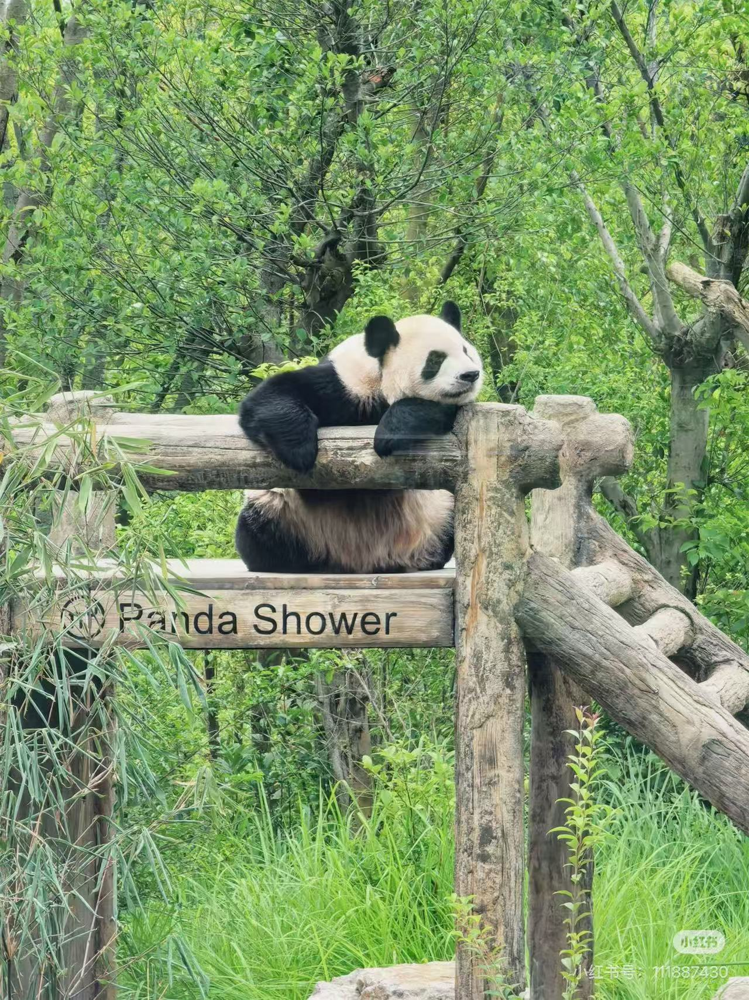
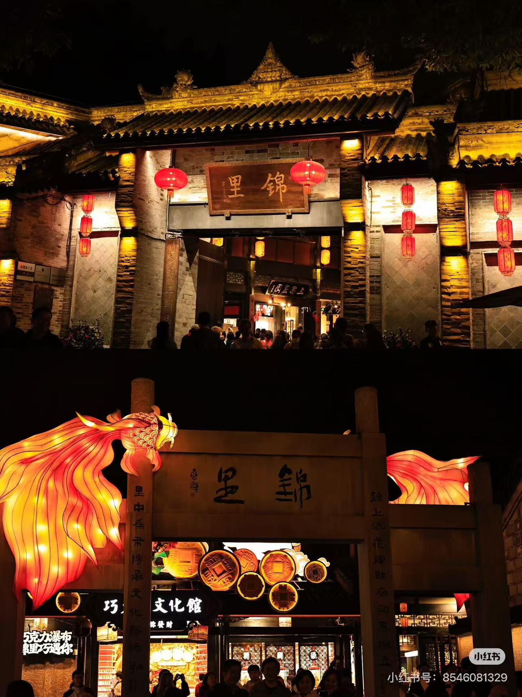
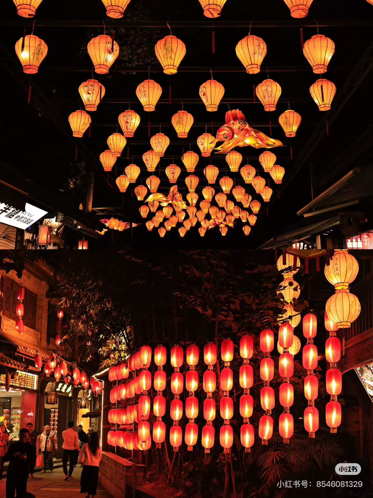
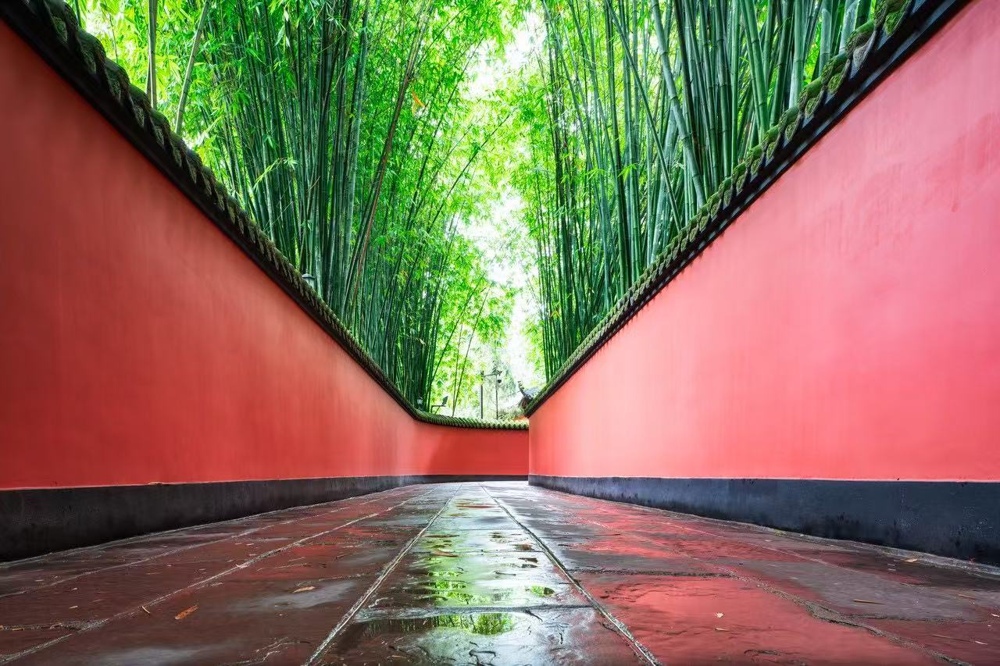
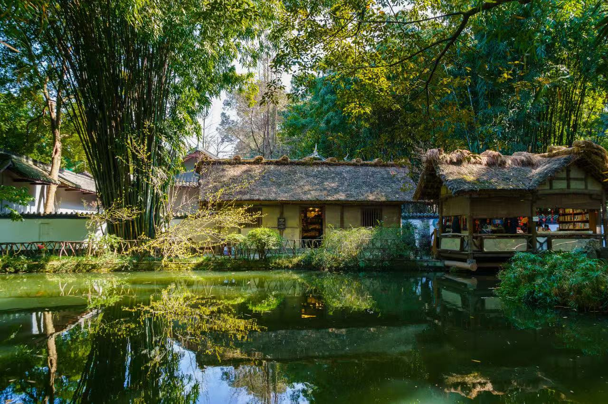
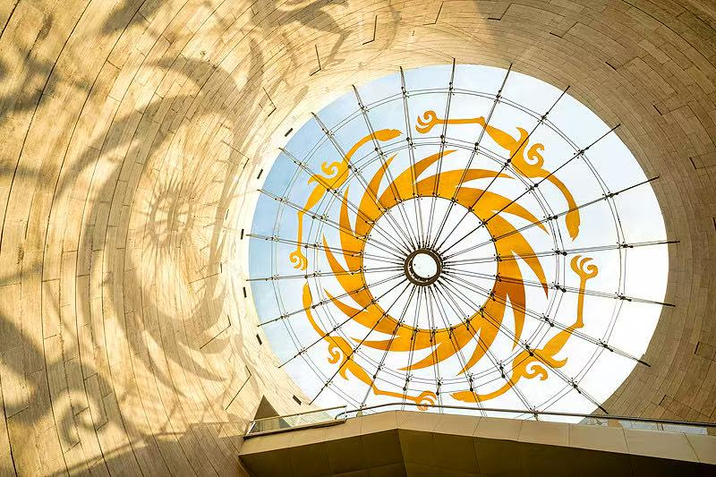

成都·天府之国
探索天府之国的魅力，感受历史与现代的交融
成都旅游精华介绍
探索天府之国的魅力，感受历史与现代的交融
位于成都市新都区的国家级大熊猫保护研究中心

位置：位于成都市新都区，距市中心约 10 公里，交通便利，是国家级大熊猫保护研究机构。
门票：成人票 80 元，学生优惠票 40 元，儿童（1.2米以下）免费。节假日可能需要提前预约。
开放时间：07:30 - 18:00（夏季季节 07:00 - 18:30），建议游客提前 2 小时入园，以便观看熊猫活动时段。
适合游玩季节：春季（3-5月）和秋季（9-11月）气候宜人，熊猫活跃度高；夏季可观察到熊猫的清凉行为，冬季则可看到憨态可掬的冬季活动。
打卡看点：大熊猫宝宝观察区、科普展览馆、模拟竹林散步道、熊猫医院观察窗，以及每天的熊猫喂食表演。
从建立历史到繁育保护，全面解读中国国家宝物的科普知识
成都大熊猫繁育研究基地始建于1987年，是中国最早、规模最大、技术最全的大熊猫人工繁育研究机构。基地的成立标志着中国正式进入大熊猫人工繁育的新时代，旨在通过科学手段解决大熊猫繁育难题，拯救这一濒危物种。从最初的几只引进熊猫到现在的百余只种群，基地经历了近四十年的不断探索与发展。
基地致力于大熊猫的人工繁育与种群保护，通过人工授精、幼崽抚育、基因检测等先进技术，已成功繁育出百余只大熊猫幼崩，其中许多已经成功归归野外或安置在国内外动物园。基地还积极开展种群遗传学研究，建立了完整的大熊猫基因库，为大熊猫的长期保护奠定了坚实的科学基础。
大熊猫的生活习性独特而迷人：它们主要以竹子为食，每天需要消耗约12-15公斤的竹笋和竹叶，但它们的消化系统并不适合处理竹子，因此每天要花费大量时间进食。大熊猫是典型的独居动物，但并不排斥在特定区域内的社交。它们的生活作息为“早起觅食、午后休息、夜间活动”。在基地中，游客可以观察到熊猫们有趣的互动行为，如爬树、嬉戏、亲昵的依偎等，这些都是它们生活习性的直接体现。
为了让游客能更好地了解大熊猫并合理安排参观路线，建议按照以下顺序游览：
成都最古老、最具特色的老城区之一，感受浓厚的川文化氛围

地理位置：位于成都市武侯区锦里街，紧邻武侯祠，地理位置优越，是成都城市历史文化的重要组成部分。
门票：免费开放（个别展览或活动可能收费），夜间灯光秀免费观赏。
开放时间：10:00 - 22:00（建议白天参观商铺，晚上感受灯光氛围），节假日可能延长营业时间。
特色小吃：夫子庙糖醋排骨、麻花、抓饭、特色茶饮、手工工艺品，是成都美食的重要组成部分。
标志性景观：古街青石板路、传统木制商铺、网红打卡 灯笼、川剧变脸表演舞台、文昌阁等。
漫步在青石板路上，耳边是老成都方言的交谈声，眼前是五彩斑斓的灯笼和古色古香的木制商铺。每一块青砖都讲述着明清时期的故事，每一家店铺都散发着诱人的香气。古街的每一个角落都藏着故事，无论是寻找特色小吃，还是欣赏非遗川剧表演，都让人流连忘返。
第一人视角的街头巷尾，感受夜色与古街的碰撞

走在锦里古街的青石板路上，脚下是厚实的青石，周围是错落有致的木质商铺门牌。空气中弥漜着刚出锅的麻花香和热腾腾的糖醋排骨气息。五彩斑斓的灯笼在头顶摇曳，投下斑驳的光影。
夜色降临，锦里古街的灯光亮起，整条街瞬间变成了绚丽的画卷。灯笼的温暖光晕与现代的霓虹灯交织，既有古老的韵味又不失时尚感。川乐在手，游人如织，每个人的脸上都洋溢着愉悦的笑容。无论是手持棍子的老人，还是手牵手的情侣，大家都在感受着这份独特的氛围。
尤其是在农历新年或节假日，古街更是人山人海，焰火连天，热闹非凡，是感受浓厚川文化的最佳窗口。
三国时期蜀汉丞相诸葛亮的祠堂，三国文化的重要圣地

位置：位于成都市武侯区武侯祠路，坐落于青城山脚下，交通便利，是成都市重要的历史文化遗址。
门票：成人票 80 元，优惠票 40 元（学生、老年人），免费开放日每月最后一天，节假日需提前预约。
开放时间：08:00 - 18:00（冬季可能稍作调整），建议游客安排 1.5-2 小时参观。
核心看点：三雕神像（诸葛亮、刘备、关羽），古建筑格局宏大，博物馆展出的三国文物，以及周围的古树名花。
探究三国文化核心，感受君臣合祀的独特历史风范
武侯祠建于唐代，明清多次修缮。作为纪念三国时期蜀汉丞相诸葛亮的重要场所，武侯祠已经流传了千余年。从最初的简陋祠堂到如今的宏伟建筑，见证了中国人民对诸葛亮“忠诚、智慧、爱国”形象的不断崇拜与追忆。每逢传统节日，前来祭祀的游人络绎不绝，香火不断。
三国时期（公元220-280年）是中国历史上的动荡与变革时期，蜀国作为三国之一，其政治、军事、文化都留下了深远影响。诸葛亮作为蜀国丞相，以其卓越的政治手腕和军事才能，以及《出师表》中的家国大义，成为了后世最受推崇的政治家和军事家之一。武侯祠的存在，正是为了永远铭记这一段波澜壮阔的历史。
武侯祠最独特的特色在于“君臣合祀”。即：主祀刘备（刘玄德），侧祀关羽、张飞；从祀诸葛亮。这种“君臣合祀”的形式在中国祠堂中极为罕见，体现了“忠君爱国”的传统美德，以及古人对刘备作为君主与诸葛亮作为其忠臣之间深厚关系的尊崇。这种独特的祭祀形式，使得武侯祠成为了三国文化的象征。
武侯祠博物馆内藏有大量珍贵文物，包括：汉代陶俑、三国时期的铜钱、陶俑、书法字画等。其中最著名的要数三雕神像（诸葛亮、刘备、关羽的塑像），以及馆内保存完好的《诫子书》抄本、三国时期的兵器模型等。每一件文物都承载着三国时期的历史记忆，让人得以一览那段波澜壮阔的历史。
唐代伟大诗人杜甫的居住地，诗意栖居的象征

位置：位于成都市郊外茶店子街道，占地约 8 公顷，毗邻青城山，环境幽静，是唐代诗人杜甫的草堂遗址公园。
门票：成人票 70 元，学生优惠票 35 元，儿童（1.2米以下）免费。四季票及团体票有优惠。
开放时间：07:00 - 19:00（四季略有不同，冬季可能略早关门），建议游客安排 2-3 小时参观。
环境特点：竹林环绕、池塘倒映、茅屋式建筑，山水相依，诗意栖居。草堂内有“草堂茅舍”、“诗塔”、“杜像”等景点，景色如诗如画。
漫步诗中，感受诗人在此居住经历与经典诗作的深刻内涵
杜甫在草堂居住了约四年时间（公元759-765年），这是他晚年最富生产力的时期。在这段经历中，他从 initially 郁郁不得志的落魄诗人，逐渐成为唐代诗坛的绝对巨擘。草堂的环境，竹林掩映、池塘荡漾，为他的诗创作提供了宁静的栖息地。在此期间，他创作了大量不朽名篇，诗中饱含了对国家社稷、百姓疾苦的深切关怀。
杜甫在草堂期间创作了大量传世诗作，其中最著名的包括：《望月怀古》、《绝句》、《春夜洛城闻笛》等。这些诗作有的借景抒情，有的讽喻时弊，有的描写生活，都展现了杜甫深厚的文化功底和对社会的关怀。
（注：以上诗词为经典代表，具体诗作请以官方导览为准）
杜甫草堂的历史可追溯至唐代，但目前保存的主要是清代及后来的修缮建筑。从最初的简陋茅舍，到后来的毁于战火，再到清代的重建和近现代的保护，草堂的每一次重建都承载着人们对杜甫的尊崇和对传统文化的传承。今天的草堂，虽然不再是原貌，但仍保留了原址格局，让游客能够感受到那份浓浓的诗意和历史厚重。
探寻古蜀文明的奥秘，感知太阳神鸟的神秘光芒

位置：位于成都市金牛区金沙遗址公园，占地面积约 5 平方公里，是中国重要的考古遗址公园，也是成都市的重要文化地标。
门票：金沙遗址公园免费开放，博物馆展览区需购买门票（成人 80 元，优惠票 40 元），节假日建议提前在线预约。
开放时间：08:00 - 20:00（夏季延长至21:00），遗址区和景观区全天候开放，建议游客安排 2-3 小时参观。
核心景观：古蜀王宫遗址、祭祀区、墓葬群、金沙博物馆，以及太阳神鸟、神兽等珍贵文物展示区。
金沙遗址可追溯至 3000 年前的三星堆文化延续，是研究古蜀文明的重要实证。遗址出土的大量青铜器、金银器、玉器和象牙制品，展现了古蜀人非凡的冶金艺术水平和独特的宗教信仰。与黄河流域的黄河文明相比，古蜀文明在城邦形成、社会等级、宗教仪式等方面有着独特的发展道路，是中华文明多元一体的重要组成部分。
太阳神鸟是金沙遗址的镇馆之宝，也是中国古代金器艺术的巅峰之作。它由细薄的金片拼装而成，栩栩如生地展现了一只展翅高飞的神鸟形象。金鸟形象核心设计源于古蜀人对太阳崇拜的宗教信仰，象征着太阳、光明和生命力。其精美的工艺和独特的艺术风格，被誉为“中华古代金器之冠”，在世界金器艺术中占有举足轻重的地位。
金沙遗址的发掘，极大地丰富了我们对中华古代文明的认识。它证明了在青铜器时代，西南地区已经形成了高度发达的社会形态和复杂的宗教仪式体系。遗址中完整的城市规划、墓葬群布局和祭祀区分区，为研究古代国家形成、社会结构和宗教提供了宝贵的实物资料。金沙遗址的保护与研究，不仅是对一次文明的传承，更是对中华文化多元起源的深入探索。